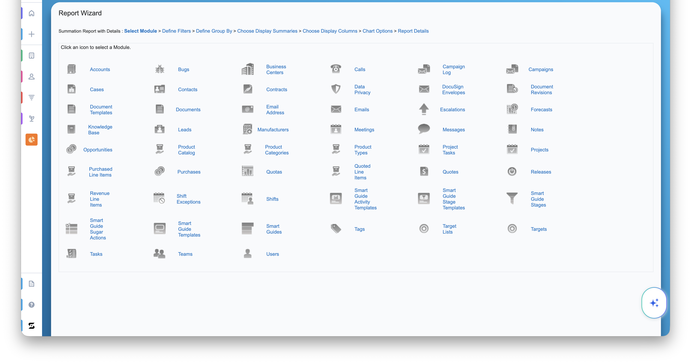
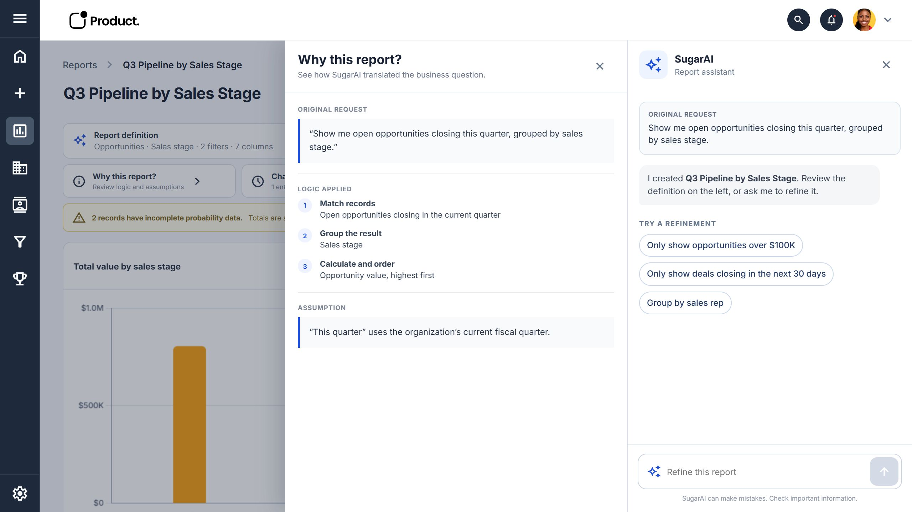
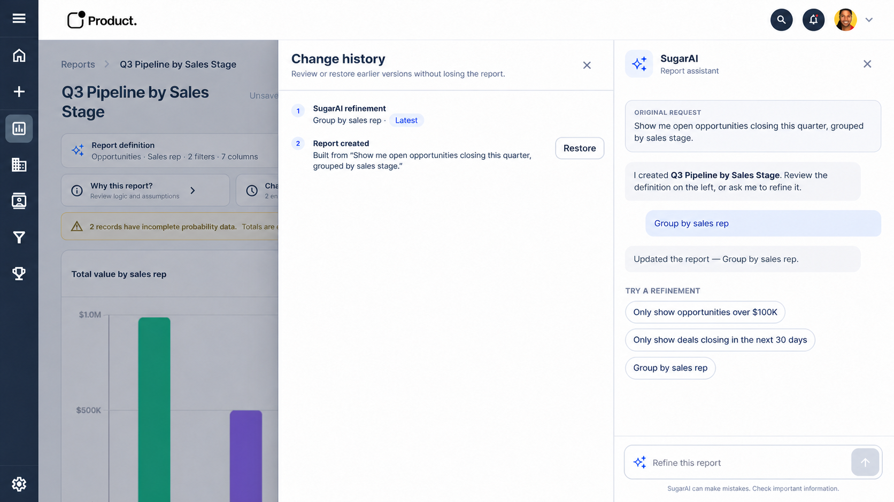
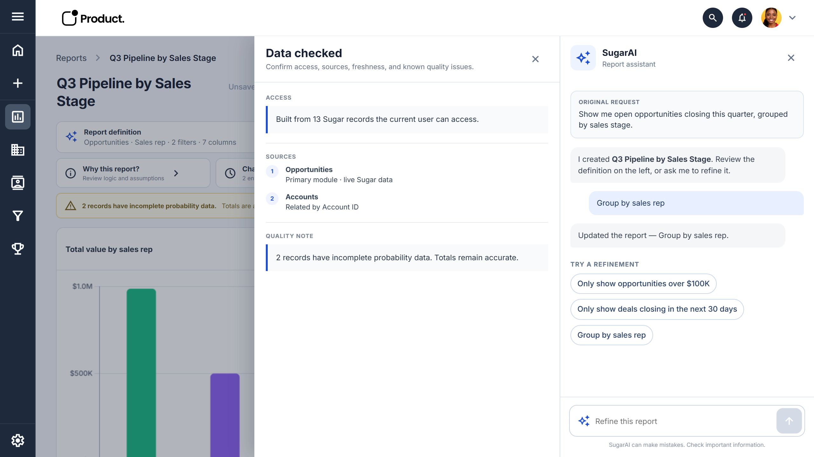

Sales Representative
What do I need to work on today?
- My pipelineWhich opportunities need my attention?
- Closing and stalled dealsWhat is urgent, valuable, or no longer moving?
- Recent activityWhere do I need to follow up next?
SugarAI · Enterprise reporting
I designed a SugarAI reporting concept that starts with a business question and keeps expert controls within reach.
The problem
A sales leader knows what they need: open opportunities closing this quarter, grouped by sales stage. The existing workflow begins somewhere else, with the product’s data structure.
Users first choose a report type and module, navigate relationships, define filters, configure summaries, select columns, and set chart options. They reason through the implementation before seeing an answer.
Each decision lives on a separate screen, so users hold the report in their head while working through one fragment at a time.
The current experience begins with the system’s data model. The redesign begins with the user’s question.
Problem anatomy

Research
I met with sales reps and leaders to understand what they repeatedly needed reports to answer. Reps focused on today’s priorities; leaders looked for team health, forecast risk, and pipeline patterns.
Sales Representative
Sales Leader
Design challenge
The research made the central tension clear: natural language could make reporting faster, but a silently generated chart would hide the reasoning behind it.
A chat-only shortcut was not enough. SugarAI needed to propose the setup, then make inspection, editing, and recovery immediate.
Key decisions
Before and after
SugarAI handles the setup work. People describe what they need, check the proposed structure, and build the report.
Start with the CRM’s structure and work through seven separate decisions.
Start with the business question and confirm the structure before building.
The new concept
Flow 1
The primary path turns a plain-language request into a report through a few deliberate checkpoints.
Demo
SugarAI frames the question, checks for existing work, confirms the setup, and returns an editable report. Users can preview the table and switch chart types without changing the definition.
Key moments inside Flow 1
Help getting started
Create with SugarAI opens with common questions from the research: pipeline by stage, at-risk opportunities, quarterly forecast, and win rate by rep. The examples give users a strong starting point.

Check what already exists
SugarAI first searches existing reports and surfaces likely matches. Users can open one or start a new report anyway, avoiding duplicates without blocking creation.

Review before building
One screen brings together the data source, report type, grouping, metric, filters, and columns. Users can correct the setup before generation.

While SugarAI builds
A short sequence names the work underway: reading the request, checking records, grouping the result, and preparing the chart and table.

After the report is built
The Report definition drawer keeps the setup available after the result appears, so users can inspect or refine it without starting over.

Flow 2
The follow-up path lets users change a completed report, preview each update, and recover earlier versions.
Demo
The recording starts from the completed report, applies two refinements, previews each update, and ends with the history drawer open.
Why should I trust this?
Post-build drawers answer practical questions without competing with the main report: Why this report?, Change history, and Data checked.



Current status and testing
The concept is intended to speed up reporting without removing the controls people rely on. Advanced work remains available in the builder, while the design also accounts for data quality, empty results, stale records, and permissions.
Sessions test whether sales reps and leaders can describe the report they need without first translating it into modules, filters, and fields.
Participants review SugarAI’s interpretation, check the proposed structure, preview refinements, and recover an earlier version.
Entry points for scheduled reports, sharing, export, and report details help test where people expect those actions to live.
“How do we get this in the hands of my team next week?”
Early feedback suggests that the core premise is understandable, with participants asking when they can use the prototype in day-to-day reporting. Until testing is complete, the move from seven setup screens to three steps remains a workflow hypothesis rather than a measured time saving.